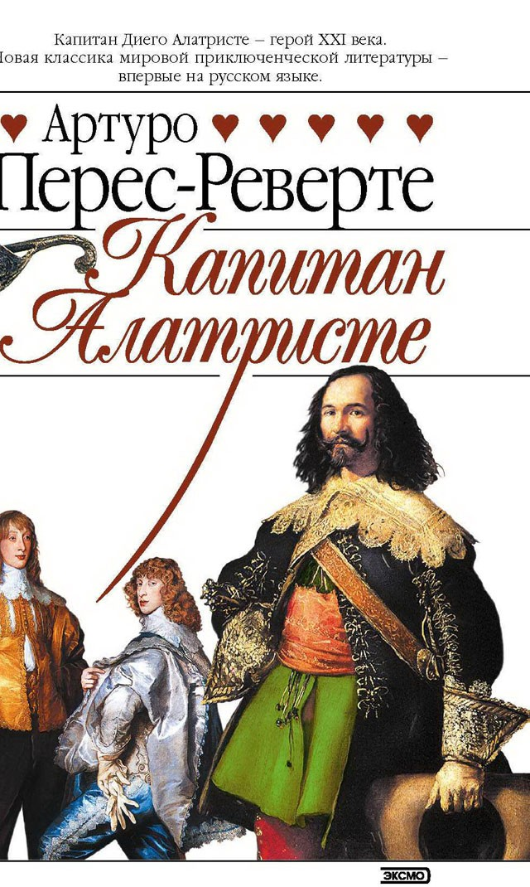
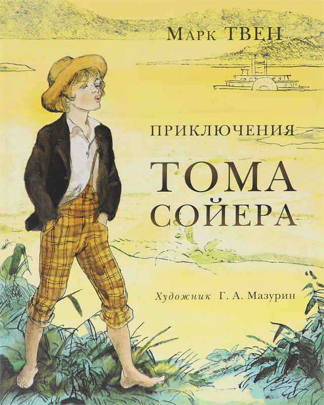
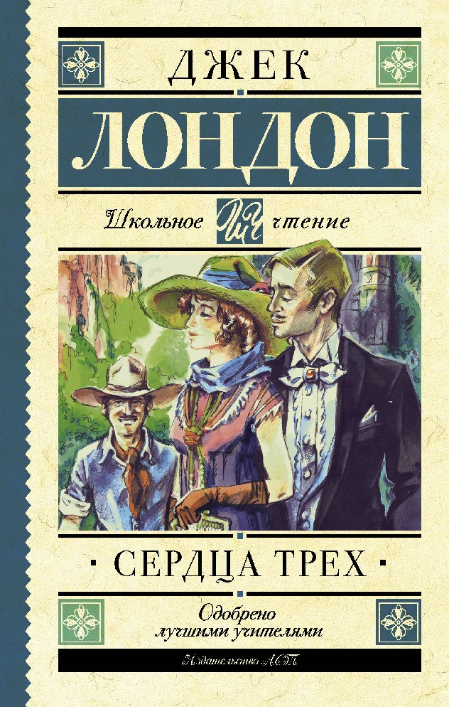

"Затерянный мир" — это увлекательная история о чудаковатом профессоре Челленджере и его друзьях, открывших настоящий "затерянный мир" в неисследованном районе Южной Америки и обнаруживших в нем живых динозавров. Книга ничуть не устарела и десятилетия спустя читается с таким же интересом, с каким читалась и прежде.
В сборник также вошло продолжение приключений полюбившихся героев — повесть "Отравленный пояс".
«Капитан Алатристе»

Артуро Перес-Реверте, действительный член Королевской академии испанского языка и литературы (с 2003 года), автор прославленных интеллектуальных детективов «Фламандская доска», «Клуб Дюма», «Кожа для барабана» в цикле о капитане Алатристе, смело ведет игру на поле, где оставили яркий след такие знаменитые мастера авантюрно-исторических романов, как Александр Дюма, Рафаэль Сабатини, Эмилио Сальгари, и нисколько не уступает им.
«Приключения Тома Сойера»

Беззаботный школьник Том Сойер — озорник и выдумщик, но у него доброе сердце и светлая голова. Он любит убегать из дома, купаться в речке и легко превращает наказание в развлечение. Вместе со своим другом Геком Финном он весело проводит время. Мальчишки пускаются в приключения, попадают в передряги и проказничают.
История веселого, живого, озорного Тома Сойера — одна из самых лучезарных книг в мировой литературе.
«Сердца трех»

Опасные приключения, поиск сокровищ, увлекательная история любви — в завораживающей истории далеких потомков великого пиратского капитана, которые отправились на поиски старинного клада, оставленного их легендарным предком.
Роман «Сердца трех» покоряет своим интригующим сюжетом и необыкновенным динамизмом действия.